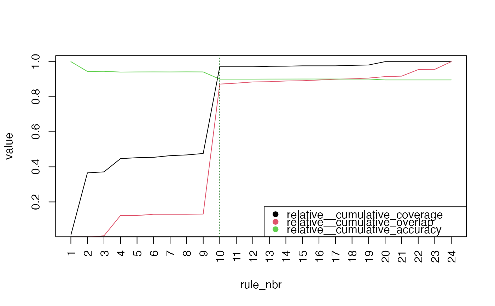
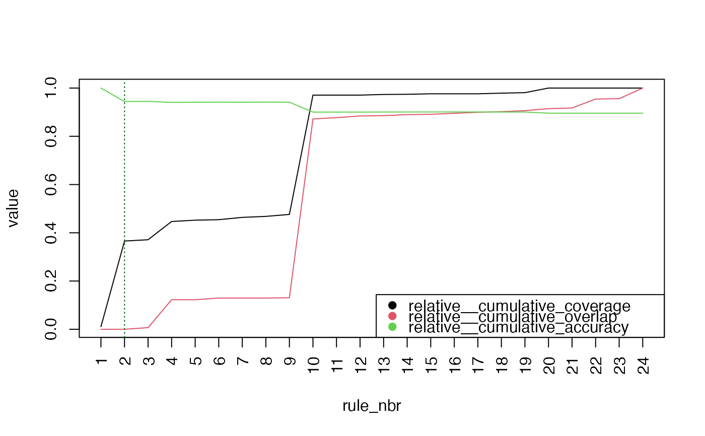
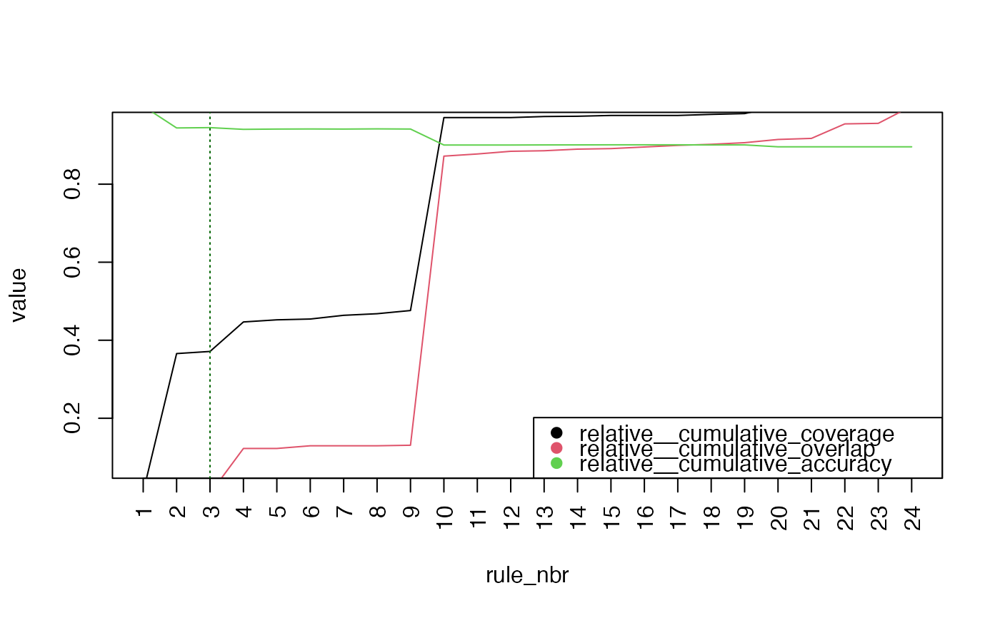

# S3 method for rulelist
prune(
tree,
metrics_to_exclude = NULL,
stop_expr_string = "relative__cumulative_coverage >= 0.9",
min_n_rules = 1,
...
)A rulelist
(character vector or NULL) Names of metrics not to be calculated. See calculate for the list of default metrics.
(string default: "relative__cumulative_coverage >= 0.9") Parsable condition
(positive integer) Minimum number of rules to keep
Named list of custom metrics passed to calculate
Object of class 'prune_ruleslist' with these components: 1. pruned: ruleset keeping only first 'pos' rows. 2. n_pruned_rules: pos. If stop criteria is never met, then pos = nrow(ruleset) 3. n_total_rules: nrow(ruleset), 4. metrics_df: Dataframe with metrics and relative metrics 5. stop_expr_string
Metrics are computed using calculate. 2. Relative metrics (prepended by 'relative__') are calculated by dividing each metric by its max value. 3. The first rule in rulelist order which meets the 'stop_expr_string' criteria is stored (say 'pos'). Print method suggests to keep rules until pos.
library("magrittr")
model_c5 = C50::C5.0(Attrition ~., data = modeldata::attrition, rules = TRUE)
tidy_c5 = tidy(model_c5) %>%
set_validation_data(modeldata::attrition, "Attrition") %>%
set_keys(NULL)
#' prune with defaults
prune_obj = prune(tidy_c5)
#' note that all other metrics are visible in the print output
prune_obj
#> ── Prune Suggestion ────────────────────────────────────────────────────────────
#>
#> ✔ Keep first 10 out of 24
#>
#> ℹ Metrics after 10 rules:
#>
#> ℹ Run `plot(x)` for details; `x$pruned` to get pruned rulelist
#> ────────────────────────────────────────────────────────────────────────────────
plot(prune_obj)

prune_obj$pruned
#> ---- Rulelist --------------------------------
#> ▶ Keys: NULL
#> ▶ Number of rules: 10
#> ▶ Model type: C5
#> ▶ Estimation type: classification
#> ▶ Is validation data set: TRUE
#>
#>
#> rule_nbr trial_nbr LHS RHS support confidence lift
#> <int> <int> <chr> <fct> <int> <dbl> <dbl>
#> 1 1 1 ( JobLevel <= 1 ) & ( Mont… Yes 16 0.944 5.9
#> 2 2 1 ( EnvironmentSatisfaction … No 521 0.941 1.1
#> 3 3 1 ( DailyRate <= 722 ) & ( J… Yes 13 0.933 5.8
#> 4 4 1 ( JobRole == 'Research_Sci… No 195 0.924 1.1
#> 5 5 1 ( EnvironmentSatisfaction … Yes 9 0.909 5.6
#> 6 6 1 ( EnvironmentSatisfaction … Yes 9 0.909 5.6
#> 7 7 1 ( JobRole %in% c('Laborato… Yes 14 0.875 5.4
#> 8 8 1 ( JobRole == 'Laboratory_T… Yes 6 0.875 5.4
#> 9 9 1 ( Department == 'Sales' ) … Yes 13 0.867 5.4
#> 10 10 1 ( TotalWorkingYears > 2 ) No 1347 0.864 1
#> ----------------------------------------------
#' prune with a different stop_expr_string threshold
prune_obj = prune(tidy_c5,
stop_expr_string = "relative__cumulative_coverage >= 0.2"
)
prune_obj #' as expected, has smaller then 10 rules as compared to default args
#> ── Prune Suggestion ────────────────────────────────────────────────────────────
#>
#> ✔ Keep first 2 out of 24
#>
#> ℹ Metrics after 2 rules:
#>
#> ℹ Run `plot(x)` for details; `x$pruned` to get pruned rulelist
#> ────────────────────────────────────────────────────────────────────────────────
plot(prune_obj)

prune_obj$pruned
#> ---- Rulelist --------------------------------
#> ▶ Keys: NULL
#> ▶ Number of rules: 2
#> ▶ Model type: C5
#> ▶ Estimation type: classification
#> ▶ Is validation data set: TRUE
#>
#>
#> rule_nbr trial_nbr LHS RHS support confidence lift
#> <int> <int> <chr> <fct> <int> <dbl> <dbl>
#> 1 1 1 ( JobLevel <= 1 ) & ( Month… Yes 16 0.944 5.9
#> 2 2 1 ( EnvironmentSatisfaction %… No 521 0.941 1.1
#> ----------------------------------------------
#' prune with a different stop_expr_string metric
st = "relative__cumulative_overlap <= 0.7 & relative__cumulative_overlap > 0"
prune_obj = prune(tidy_c5, stop_expr_string = st)
prune_obj #' as expected, has smaller then 10 rules as compared to default args
#> ── Prune Suggestion ────────────────────────────────────────────────────────────
#>
#> ✔ Keep first 3 out of 24
#>
#> ℹ Metrics after 3 rules:
#>
#> ℹ Run `plot(x)` for details; `x$pruned` to get pruned rulelist
#> ────────────────────────────────────────────────────────────────────────────────
plot(prune_obj)

prune_obj$pruned
#> ---- Rulelist --------------------------------
#> ▶ Keys: NULL
#> ▶ Number of rules: 3
#> ▶ Model type: C5
#> ▶ Estimation type: classification
#> ▶ Is validation data set: TRUE
#>
#>
#> rule_nbr trial_nbr LHS RHS support confidence lift
#> <int> <int> <chr> <fct> <int> <dbl> <dbl>
#> 1 1 1 ( JobLevel <= 1 ) & ( Month… Yes 16 0.944 5.9
#> 2 2 1 ( EnvironmentSatisfaction %… No 521 0.941 1.1
#> 3 3 1 ( DailyRate <= 722 ) & ( Jo… Yes 13 0.933 5.8
#> ----------------------------------------------